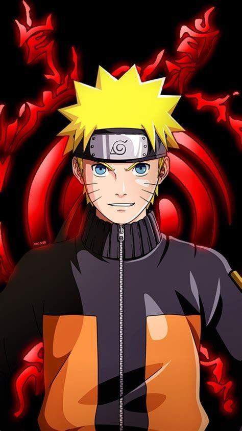

- Nome:Naruto
- Idade: 32 anos
- Ainda Vivo: Sim
-
Principais Jutsus: Sexy, Multiplos Clones das Sombras, Invocação,
Rasengan, Rasen-Shuriken

- Nome:Minato
- Idade: 24 anos
- Ainda Vivo: Não
-
Principais Jutsus: Rasengan, Invocação, Clones das sombras,
Tecnica de Selamento, Hiraishin
- Nome:Kakashi
- Idade: 47 anos
- Ainda Vivo: Sim
-
Principais Jutsus: Multiplos clones das sombras, Rasengan, Chidori, Raikiri,
Sharingan
- Nome:Itachi
- Idade: 21 anos
- Ainda Vivo: Não
-
Principais Jutsus: Izanami, Kotoamatsukami, Tsukiyomi, Susanoo,
Amaterasu